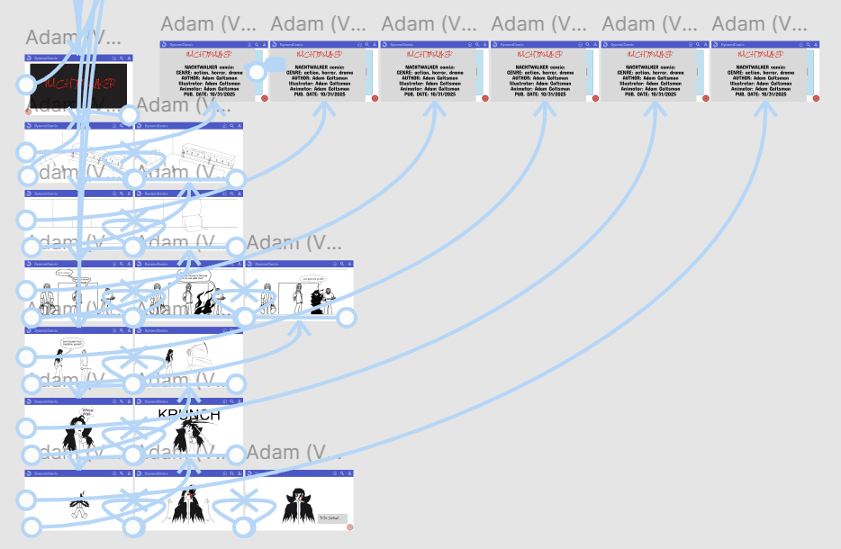

Web Comic Prototype
An interactive prototype of a web comic service called “DynamiComix” designed by myself and members of my
group to have transitions from panel to panel that are animated or otherwise dynamic. Created in
Figma.
My responsibility was to oversee visual design and user experience.I was
responsible for ensuring the prototype and presentation were consistent with the
infographic’s design at all points in the prototype. I also designed the page layout for the parts of the
prototype when users would be navigating or reading a comic. As well as illustrating the concept comic
used in the prototype
While the red arrow buttons are fully opaque, clicking on them transitions the image to the next or previous
panel depending on which arrow button the user clicks. clicking on the grey tab on the left opens up a
summary about the comic. The house button sends the user to the home menu, the magnifying glass sends the
user to the search menu, and the person icon sends the user to the account tab.
This project taught me the ins and outs of developing a website from a concept idea to a functional
prototype in collaboration with a team. The biggest difficulties on my part were the in the early stages,
namely the layout of the website and the nature of the panel to panel transitions. After communicating with
my group, we were able to form a design that was both functional and visually pleasing without being too out
of place compared to the other menu designs created by fellow members of my group.